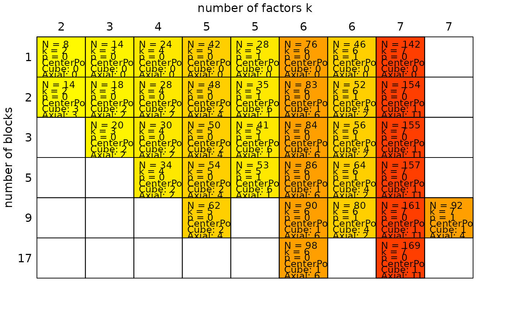

rsmChoose: Choosing a response surface design from a table
Source:R/3.3_Factorial_designs_Functions.R
rsmChoose.RdDesigns displayed are central composite designs with orthogonal blocking and near rotatability. The function allows users to choose a design by clicking with the mouse into the appropriate field.
Value
Returns an object of class facDesign.c.
Examples
rsmChoose()

#>
#> Choose a response surface design by clicking into the appropriate field
#> Waiting for your selection:
#>
#> StandOrd RunOrder Block A B y
#> 6 6 1 1 0.000 0.000 NA
#> 2 2 2 1 1.000 -1.000 NA
#> 7 7 3 1 0.000 0.000 NA
#> 5 5 4 1 0.000 0.000 NA
#> 3 3 5 1 -1.000 1.000 NA
#> 1 1 6 1 -1.000 -1.000 NA
#> 4 4 7 1 1.000 1.000 NA
#> 9 9 8 2 1.414 0.000 NA
#> 8 8 9 2 -1.414 0.000 NA
#> 13 13 10 2 0.000 0.000 NA
#> 12 12 11 2 0.000 0.000 NA
#> 11 11 12 2 0.000 1.414 NA
#> 10 10 13 2 0.000 -1.414 NA
#> 14 14 14 2 0.000 0.000 NA